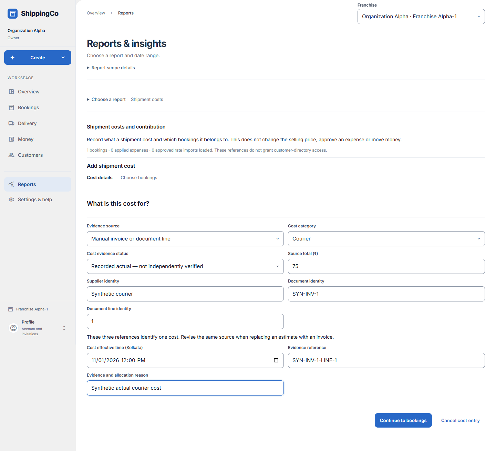
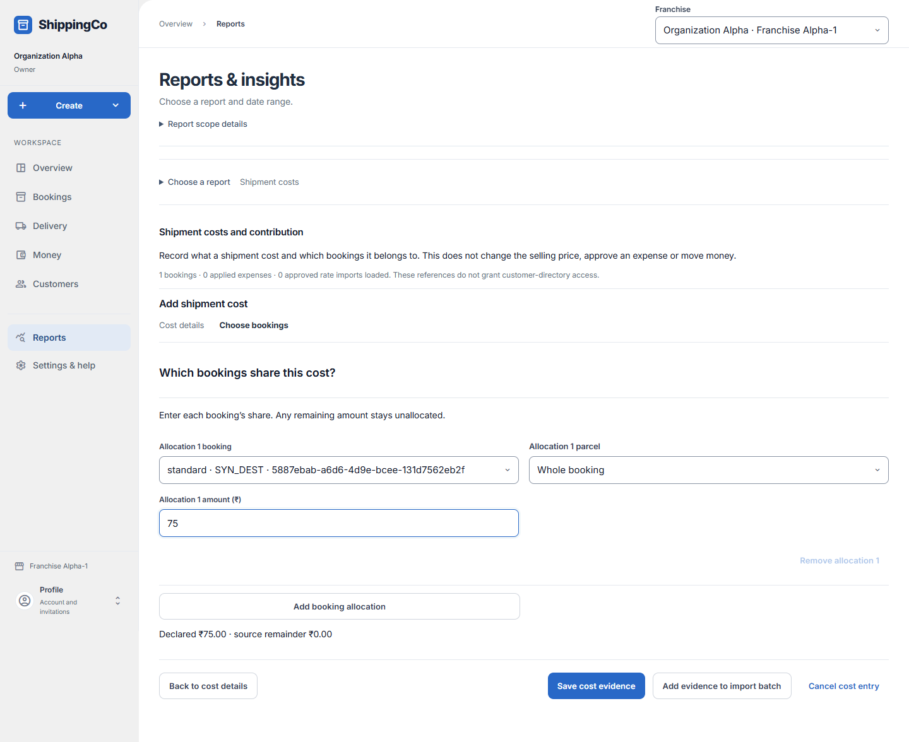

Shipment costs
What this helps you do
- Record purchase-cost evidence and allocate it to the bookings it belongs to.
Open this feature
- Reports > Choose a report > What did each shipment cost? > Add shipment cost.
- Check the active branch first. Available actions depend on your role and the selected record.



Step 1 — cost details
- Select Evidence source and Cost category: courier, packing, agent or payment.
- For Manual invoice or document line choose actual or estimated status and enter source total in rupees, supplier identity, document identity and line identity. These identify one cost; revise the same source when an invoice replaces an estimate.
- For Existing applied expense choose an already applied expense. Attribution does not approve or pay it. Per-delivery agent fees use their proof; agreed-period fees need explicit allocation.
- For Not applicable / no charge declaration supply evidence explaining why the category does not apply. Missing evidence is not zero.
- Enter effective time when shown, Evidence reference, and Evidence and allocation reason. Continue to bookings.
Step 2 — booking allocations
- Choose Allocation booking and Whole booking or an individual parcel, then enter that booking’s share in rupees. Add booking allocation for shared costs or remove an extra row.
- Check declared amount and source remainder. Unallocated money remains a remainder. Not-applicable declarations have no amount field; an expense corrected to zero needs explicit zero allocations.
- Select Save cost evidence or Save cost revision. A revision replaces the complete allocation list and retains earlier evidence. Use Back to cost details to fix the draft.
Rate estimates and imports
- For Approved purchase rate estimate choose the approved native import and Rate estimate booking. Preview resolves the saved service, destination and weight; review the evidence before applying.
- Add evidence to import batch queues a draft, not an applied cost. Preview form batch after assembling rows.
- Manual cost CSV requires the exact displayed header, UTF-8, at most 100 rows and 64 KiB. Amounts are integer paise and effective time is ISO. Each CSV row allocates the whole source to its booking and optional parcel; use the form for split allocations.
- Review every preview row and error. Apply exact preview atomically only when all rows are valid. A stale or conflicting source prevents all rows applying; check current evidence and prepare a new preview.
- Inspect a recorded cost source for revision history or Revise this cost and allocations. Recording costs does not change selling prices or move money.
Fields and when to use them
These fields belong to the actions above. Complete the fields for your selected action; optional filters may stay blank.
- Evidence source: Where the cost record came from: select the actual source shown. Use when shown for the selected action.
- Cost category: Choose courier, packing, agent or payment. Use when shown for the selected action.
- Cost evidence status: Choose recorded actual or estimated purchase cost for manual evidence. Use when shown for the selected action.
- Source total (₹): Enter the value in rupees, with at most two decimal places. Check the limit shown on screen. Required when this field is shown.
- Supplier identity: Use the reference from the matching saved record or real supporting document. Do not invent one. Required when this field is shown.
- Document identity: Use the reference from the matching saved record or real supporting document. Do not invent one. Required when this field is shown.
- Document line identity: Use the reference from the matching saved record or real supporting document. Do not invent one. Required when this field is shown.
- Applied expense: An already applied expense whose saved amount and occurrence time provide the evidence. Use when shown for the selected action.
- Approved purchase rate import: The approved native rate import used to estimate this booking’s cost. Use when shown for the selected action.
- Rate estimate booking: Choose the matching saved record. Check the customer and amount before continuing. Required when this field is shown.
- Cost effective time (Kolkata): Enter when the event really happened. Use the time zone named in the label. Required when this field is shown.
- Evidence reference: Use the reference from the matching saved record or real supporting document. Do not invent one. Required when this field is shown.
- Evidence and allocation reason: Explain why you are making this request or change. Use the real business reason. Required when this field is shown.
- Allocation booking / parcel: Choose the booking. Choose a parcel or Whole booking. For a manual allocation
- Allocation amount (₹): This booking’s share of the source cost. Money not allocated stays as a remainder. For a cost amount; not for Not applicable
If you need to retry
- No records: check branch, account or customer and filters. Use Load more where offered before deciding a record is missing.
- Invalid or missing value: read the form message, correct the draft, then review amounts and references again.
- Uncertain save: use the offered retry for the same request. Do not create a second payment, return, expense or application to guess whether the first saved.
- Changed evidence or policy: refresh current records and review them before a new request. A saved report retains its captured figures; create another report for current results.
About this guide
Checked against the current screen code on 1 November 2026. This explains app behaviour, not tax or accounting advice. Buttons and records can differ by role.